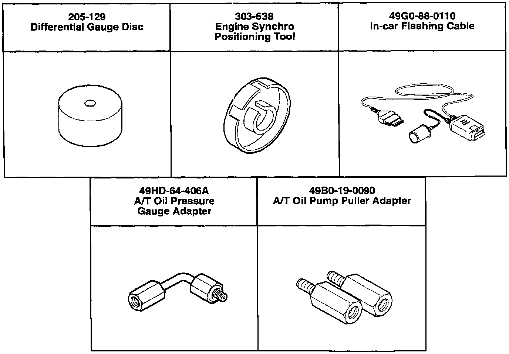

Special Tools - Shipping Date
Bulletin No. 004/98Issued 08/05/98
Revised
Category
ST
Applicable Model/s
SEE BELOW
Subject
SHIPMENT OF SPECIAL TOOLS DURING AUGUST 1998

DESCRIPTION
The Special Service Tools (SSTs) illustrated below will be shipped to your service department by Mazda's tool vendor, America Kowa Seiki, Inc. These tools are the latest addition to the Mazda Required Tools (MRT) list.
APPLICABLE MODEL(S)/VINS
The Differential Gauge Disc tool (205-129) and Engine Synchro Positioning Tool (303-638) are used to properly service the B-Series Truck. The Apr Oil Pressure Gauge Adapter (49HD-64-406A) is used to properly service the 1999 Miata. The Apr Oil Pump Puller Adapter (49B0-19-0090) is used to properly service the 1999 Protege. The In-car Flashing Cable (49G0-88-0110) is used to properly recalibrate the PCM on 1998 and later 626 and 1999 Protege. Refer to your Workshop Manual or appropriate Service Bulletin for the application of these tools.
PRICING
The total price for these tools is $256.96 plus applicable tax and shipping costs.
SHIPPING AND BILLING INFORMATION
These tools will be shipped via UPS to your service department during the week of August 17, 1998. Your parts account will be billed for these tools. Do not send your payment to America Kowa Seiki, Inc. Please advise your shipping / receiving personnel of this tool shipment.
SST STORAGE CABINET SYSTEM UPDATE INFORMATION
Update information will be enclosed in envelopes and package with the tools. This information will consist of easy update instructions, drawer liner/index update stickers, and any necessary drawer dividers.
Please contact your District Customer Support Manager, America Kowa Seiki (800-824-9655 or 562-407-5860) or Tools / Equipment Manager (949-442-6531) if you have any questions regarding this information.